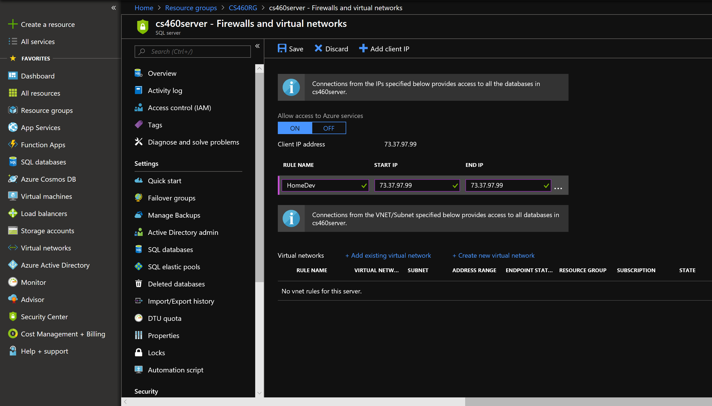
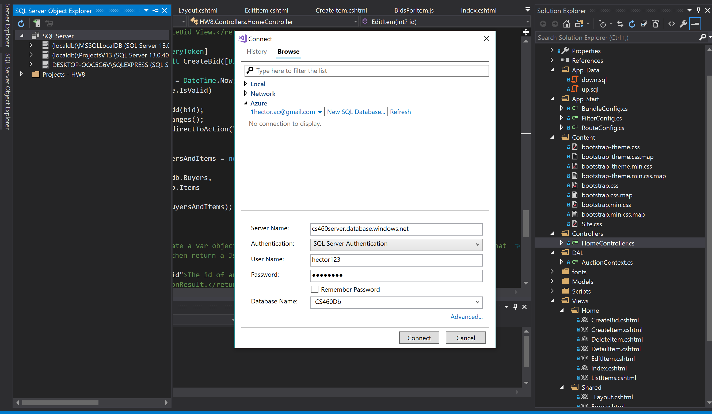
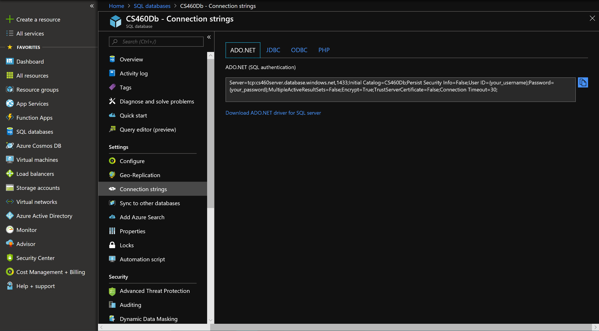
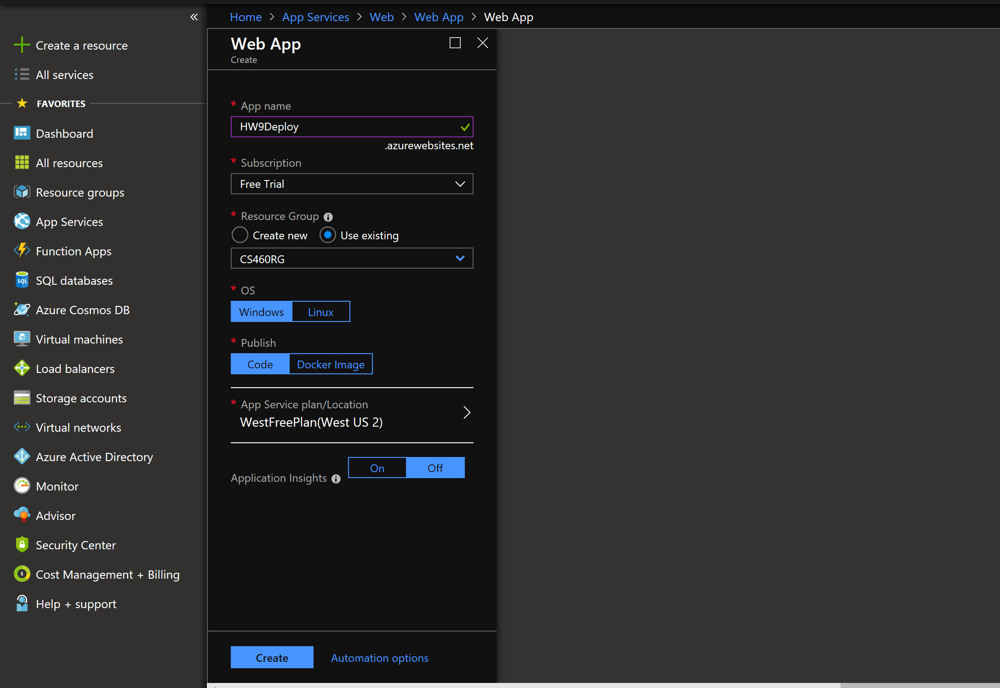
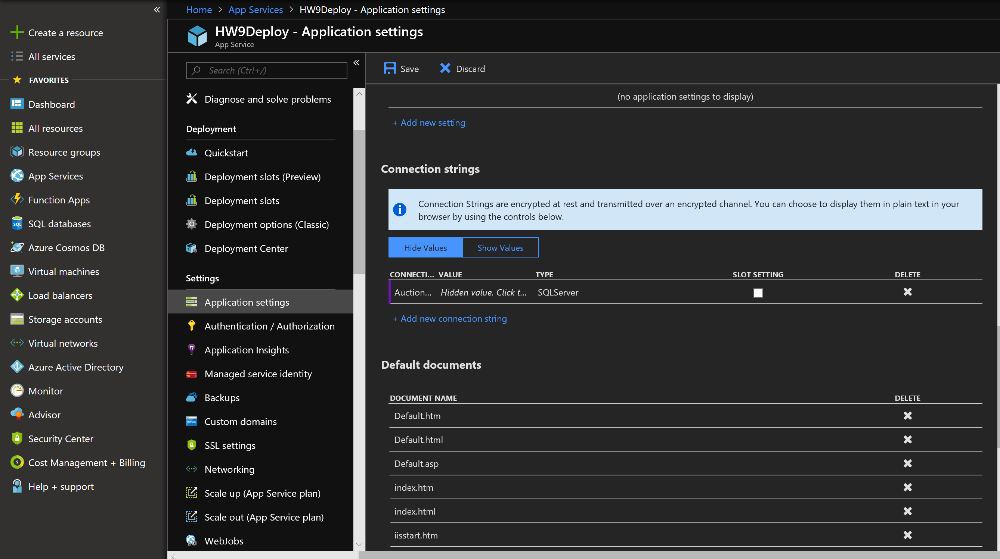

The main objective is to deploy a web application (specifically the one from homework 8) and database on azure. The details of the assignment can be found here. http://www.wou.edu/~morses/classes/cs46x/assignments/HW9_1819.html
The first part of this assignment involved making an Azure account. This part of the assignment was pretty simple and doesn't need any more explaining than that. I then used the Azure portal to make a resource group and then a server/database. That part was also pretty easy and just involved looking in the left side bar for “resource group” or “sql databases” and then hitting the “add” button on the top of the page. After that there was a small prompt for details like naming, plan, and other small things.
The next step was to add a firewall rule. The steps I took to do this were to go to the Azure portal, hit the resource group side tab, click on my resource group for the project, click on the server used for the project, click on the “show firewall setting” and then just adding the firewall rule. Image shows the the rule added:
Then I clicked the save button.
In order to connect to the Azure server through Visual Studio I first went to the SQL server Explorer on Visual Studio, clicked on the top icon to added a server, under the server name field I added the name of my azure server (can be found on Azure portal by clicking on the database which should display a server name on the page), made sure it was with sql authentication and then just added the server login info. I proceeded to go to my “up.sql” script and ran to the database from Azure. Image below show me connecting to it:
To get the connection string into my project application I just went to the Azure portal, Clicked on the “SQL databases” tab on the left, clicked on the database we were using, and then clicked on the link that says “show database connection string”. Image of the result shown below:
Then I just copied that into my applications Web.config file. Note that I did have to edit the username and password in the connection string.
The next thing I needed to do was to make a Web App on Azure to deploy my application on. I started with going to the Azure portal, clicking on the left “App Services” tab, click on the “add” button on the top of the page, chose web app, then click on create button. Then I filled in details of the app, images below shows the details:
Then I hit create.
Next I needed to setup the connection string in the Web App on azure. I started by going to the Azure portal, clicking on the “app services” tab on the left,click on the app we created before, then clicked on the “Application Setting” tab on the center-left, scrolled down to the connection string section and added a connection string. Image shows the details:
Then i hit save.
Finally on Visual studio I went to the build tab, hit published project, I went to the “AppServices” tab, selected existing and proceeded to the next window. The next window was pretty straight forward and had us chose the web app we created on azure to deploy on. Then I was done.
Here is the link to the deployed web app on azure: http://hw9deploy.azurewebsites.net/
The first video shows the CRUD functionality for item(list, create, edit, detail, and delete):
This video shows more homepage related features, create bids, and live update of bids on detail item page: